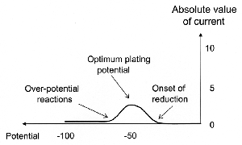
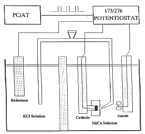

History
Before continuing with more detailed discussion of the subject at hand, a brief history of electroplating will be presented. The early history of electroplating may be traced back to around 1800. A university professor, or in modern terms: a chemist, Luigi Brugnatelli is considered as the first person to apply electrodeposition process to electroplate gold. Brugnatelli was a friend of Allisandro Volta (after whom the electric unit "volt" has been named) who had just a short time before discovered the chemical principles that would make possible the development of "voltaic" electrical cells. Volta's first actual demonstration of that was called "Voltaic Pile". As a consequence of this development, Brugnatelli's early work using voltaic electricity enabled him to experiment with various plating solutions. By 1803 he had refined his process enough to plate a fine layer of gold over large silver metal objects. He wrote in a letter to the Belgian Journal of Physics and Chemistry (later reprinted in Britain), which reads (Available on the WWW.):"I have lately gilt in a complete manner two large silver medals, by bringing them into communication by means of a steel wire, with a negative pole of a voltaic pile, and keeping them one after the other immersed in ammoniuret of gold newly made and well saturated".
Unfortunately for Brugnatelli, a disagreement or falling out with the French Academy of Sciences, the leading scientific body of Europe at the time, prevented Brugnatelli's work from being published in the scientific journals of his day. His work remained largely unknown outside of his native Italy except for a small group of associates. By 1839, however, scientist in Britain as well as in Russia had independently devised metal deposition processes similar to those of Brugnatelli's for copper electroplating of printing press plates. By 1840, this discovery was adapted and refined by Henry and George Elkington of Birmingham, England for gold and silver plating. Collaborating with their partner John Wright and using formulae developed by the latter for potassium cyanide plating baths, the Elkingtons were able to have the first viable patents for gold and silver electroplating issued on their name. From Great Britain the electroplating process for gold and silver quickly spread throughout the rest of Europe and later to the United States.
With the burgeoning knowledge and understanding of the subject of electrochemistry and its importance in understanding the processes of "electrodeposition" came the ability to deposit other metals. By the 1850's electroplating methods of bright nickel, brass, tin, and zinc were commercialized and were applied for engineering and specific commercial purposes. In time, the industrial age and financial capital had expanded from Great Britain to the rest of the world. As a result, electrodeposition processes were expanding in scope and found more and more usage in the production of a variety of goods and services. While this expansion was taking place, no significant scientific discoveries were made until the emergence of the electronic industry in the mid forties of the last century. The only exception to this were improvements made to direct current power supplies which were/are used instead of batteries. Thus it is said that the years from 1870 to 1940 were a quiet period as far as electroplating was concerned, significant only in gradual improvement in larger scale manufacturing processes, anodic and cathodic reaction principles and plating bath formulae. During the later years of the forties, rediscovery of heavy gold plating for electronic components took place. In comparison to that, during the mid to later fifties the usage of new and more "user friendly" plating baths based on acid formulae (rather than strongly poisonous cyanide based ones) were developed and introduced for large scale commercial use. In closing this brief historic summary one is to note that today a number of regulatory laws (enacted mainly in the nineteen-seventies), for instance concerning waste water emission and waste disposal, set the tone/direction for the electrodeposition/electroplating industry for the next thirty years.
Today, with the impressive progress and deeper understanding of the underlying electrochemical principles of electrodeposition, sophisticated plating baths formulae have been developed and are being routinely employed. Those provide much greater control over the working characteristics of the deposition process than hitherto. Layer thickness, performance of electroplated finishes is among the attributes that have been brought under strict control. New developments enable greater plating speed, better throwing power (the ability of a plating solution to produce a relatively uniform distribution of metal upon a cathode of irregular shape), as well as reliable plated finishes. In addition, electroplating of materials such as platinum, osmium, and ruthenium are now broadly used in electronics for connectors, circuit boards, contacts etc. The writer believes that new and innovative electroplating technology will facilitate the rapid expansion of the telecommunication industry. In general, the growth of the electronics industry as a whole, and the demand to support the expansion of its underlying infrastructure will continue to drive improvements worldwide in the electrodeposition/electroplating industry. To illustrate the possible directions of progress we mention the need for further refinement and control of dc power supplies. Such progress should lead to further achievements in the electroplating and metal finishing industry. Last, but certainly not least, safer manufacturing methods and processes including wastewater recycling should reduce work place exposure to dangerous chemicals and waste byproducts.
There has been a recent upsurge of interest in electrodeposition. This is due to three main factors/technologies:
- Metal deposition for the fabrication of integrated circuits.
- Deposition of magnetic recording devices (heads, discs).
- Deposition of multilayer structures.
Surface preparation
It is commonly accepted and often quoted by electroplaters that one can make a poor coating perform with excellent pretreatment, but one cannot make an excellent coating perform with poor pretreatment. Surface pretreatment by chemical and/or mechanical means is important not only in the case of preparations for electroplating but is also required in preparation for painting. In either of these, methods are designed to ensure good adhesion of the coating or paint to the surface. Most (metal) surface treatment and plating operations have three basic steps.- Surface cleaning or preparation. Usually this includes employing of solvents, alkaline cleaners, acid cleaners, abrasive materials and/or water.
- Surface modification. That includes change in surface attributes, such as application of (metal) layer(s) and/or hardening.
- Rinsing or other work-piece finishing operations to produce/obtain the final product.
Deposition
By now it should be evident that electrodeposition or electroplating should be defined as the process in which the deposit of a (usually) thin layer (of metal) is formed "electrolyticly" upon a substrate (that is often, but not always, also a metal). The purpose of such process may be to enhance or change the substrate's appearance and/or attributes (such as corrosion resistance). Examples are the deposition of gold or silver on jewelry and utensils, and the deposition of chrome on automobile parts. Electroplating is performed in a liquid solution called an electrolyte, otherwise referred to as the "plating bath". The bath is a specially designed chemical solution that contains the desired metal (such as gold, copper, or nickel) dissolved in a form of submicroscopic metallic particles (positively charged ions). In addition, various substances (additives) are introduced in the bath to obtain smooth and bright deposits. The object that is to be plated is submerged into the electrolyte (plating bath). Placed usually at the center of the bath, the object that is to be plated acts as a negatively charged cathode. The positively charged anode(s) completes the electric circuit; those may be at opposite edges of the plating tank, thus causing film deposit on both sides of the cathode. A power source in the form of a battery or rectifier (which converts ac electricity to regulated low voltage dc current) is providing the necessary current. This type of circuit arrangement directs electrons (negative charge carriers) into a path from the power supply (rectifier) to the cathode (the object to be plated). Now, in the bath the electric current is carried largely by the positively charged ions from the anode(s) toward the negatively charged cathode. This movement makes the metal ions in the bath to migrate toward extra electrons that are located at or near the cathode's surface outer layer. Finally, by way of electrolysis the metal ions are removed from the solution and are deposited on the surface of the object as a thin layer. It is this process to which we refer as "electrodeposition". For a more technical discussion of some aspects of the process see the Appendix.From the above it would appear that the thickness of the electroplated layer on the substrate is determined by the time duration of the plating. In other words, the longer time the object remains in the operating plating bath the thicker the resulting electroplated layer will be. Typically, layer thicknesses may vary from 0.1 to 30 microns (micron = one millionth of a meter), though nothing prevents the deposition of thicker or thinner layers, as desired. The geometric shape and contour of an object to be plated affects the thickness of the deposited layer. In general, objects with sharp corners and features will tend to have thicker deposits on the outside corners and thinner ones in the recessed areas. The cause of this difference in the resulting layer thicknesses is that dc current flows more densely to sharp edges than to the less accessible recessed areas, in other words, the current-distribution electric field lines that exist between cathode and anode in the solution). In practice, an item such as, say, a watch or similar item with sharp faceted corners are difficult (almost impossible, actually) to plate uniformly. A plating method known as electroless plating", which is outside the scope of this article, assures uniformity of plated thickness even on highly irregular shaped objects. In the case of electroplating, judicial placement of the anode(s) as well as modifications of the current density are required to overcome the thickness irregularity effects. Electroplating processes will not, as a rule, conceal preexisting surface imperfections such as scratches, dents or pits. Actually, the plating process will more often than not, make most surface blemishes even more pronounced. Thus it is important to remove any undesirable surface marks prior to the plating action.
|  |
| Fig. 2. Typical voltammogram for a single-metal deposition (current and potential are plotted on arbitrary scales; cathodic current is negative by international convention, absolute value is plotted for sake of simplicity). |
{kind=link}
However, when attempting to reduce two or more different metals from a single solution, it is essential that the processes occurring at the cathode be considered. The most effective tool for analyzing the processes is a voltammogram, a graph of current against electrode potential (Figure 2). Such a curve provides all the information necessary to select the appropriate potential for the reduction of a desired metal, individually, without the necessity of rigorously analyzing all the interactions involved. Thus, for instance, if one considered two metals "A" and "B" with metal "A" being less noble (that is, with a more negative standard potential) than "B", the voltammetric curve for either one would resemble that shown in Figure 2. For the purpose of selective deposition the important distinction between the two metals is the onset of the reduction peaks in the voltammograms and their separation. Specifically, if the two peaks are clearly separated, one can reduce only metal "B" at some potential, while both can be reduced at a more negative potential. At the more negative potential the ratio between the amount of each metal deposited, and so present in the alloy formed, is determined primarily by their relative concentrations in the solution. On the other hand, if the two voltammetric peaks overlap considerably, only an alloy can be deposited.
Another note of caution: one should not increase the cathodic potential (and current) too far to avoid parasitic reactions that may occur beyond "over-potential reactions" in Figure 2. In cases of practical applications be it electrorefining, electrowinning, or plating the practitioner is interested only in the weight of metal deposited on the cathode. Any current causing other changes is considered "wasted". Of course, according to Faraday's law the overall amount of chemical change produced by any given quantity of electricity can be exactly accounted for. Thus we define the current efficiency as the ratio between the actual amount of metal deposited to that expected theoretically from Faraday's law. In other words, the ratio of the weight of metal actually deposited to the weight that would have resulted if all the current had been used for depositing is called the cathode efficiency, and it is desirable to keep it as close to 100% as possible.
|  |
| Fig. 3. Schematics of a plating setup for the production of superlattice multilayers. |
{kind=link}
Appendix
Electrodeposition or electrochemical deposition (of metals or alloys) involves the reduction of metal ions from aqueous, organic, or fused salt electrolytes. In it's simplest form the reaction in aqueous medium at the cathode follows the equation
[1]  M+n + ne- ==> M
M+n + ne- ==> M
with a corresponding anodic reaction. The anode material can either be the metal to be deposited (in this case the electrode reaction is electrodissolution that continuously supplies the metal ions) or the anode can be an inert material and the anodic reaction is oxygen evolution (in this case the plating solution is eventually depleted of metal ions).
The deposition may, in principle, be accomplished via two different paths:
- An electrodeposition process in which electrons are provided by an external power supply.
- An electroless (autocatalytic) deposition process in which a reducing agent in solution is the electron source.
The deposition reaction presented in Equation [1] is a reaction of charged particles at the interface between a solid (metal) electrode and a liquid solution. The two types of charged particles that can cross the interface are metal ions "M+n" and electrons "e-".
The deposition reaction involves four types of issues. They are:
- Metal-solution interface as the locus of the deposition process.
- Kinetics and mechanism of the deposition process.
- Nucleation and growth process of the metal lattice (M lattice).
- Structure and properties of the deposits.
A detailed discussion of these issues is outside the scope of this article, and can be found in the books listed in the Bibliography.
The reduction of a metal, which occurs during the plating process, has been generalized as Equation [1] for a single metallic ion. Obviously, to reduce one mole of a given metal "n" moles of electrons are required. That is, the total cathodic charge used in the deposition "Q" (coulomb) is the product of the number of gram moles of the metal deposited "m", the number of electrons taking part in the reduction "n", Avogadro's number "Na" (the number of atoms in a mole), and the electrical charge per electron "Qe" (coulomb). Thus, the following equation gives the charge required to reduce "m" mole of metal:
[2]  Q = m n Na Qe
Q = m n Na Qe
Now, the product of the last two terms in this equation is the "Faraday constant" "F". Therefore, the number of moles of metal reduced by charge "Q" can be obtained as:
[3]  m = Q / (n F)
m = Q / (n F)
On the other hand, the total charge used in the deposition can be obtained as the product of the current "I" (ampere) and the time of deposition "t" (second) if the deposition current is held constant. Or, if the current varies during the deposition:
[4] 
So, the number of moles deposited can be calculated as:
[5] 
The weight of the deposit "w" (gram) can now be obtained by multiplying Equation [5] with the atomic weight "Mw" of the deposited metal. Finally, to calculate the thickness of the deposit, we have to use the density of the metal "D" (gram/cm3):
[6]  D = w / V = w / (A T)
D = w / V = w / (A T)
where "V" is the volume of the deposited metal in cm3, "A" is the area of the deposit in cm2, and "T" is its thickness in cm. Solving for thickness, using Equations [5] and [6] we have the useful practical expression:
[7] 
As mentioned above, if the current was held constant during the deposition, the integral in Equation [7], can be replaced by the simple product of current and time "I×t".
Related articles
Atomic layer deposition by electrochemistryCurrent density distribution in electrochemical cells
Effect of magnetic fields on electroplating.
Electroless deposition
Extracting metals from sulfide ores
Metal powder production by electrolysis
Bibliography
- Modern Electroplating (4th edition), M. Schlesinger and M. Paunovic (editors), Wiley, New York, 2000.
- Fundamentals of Electrochemical Deposition, M. Paunovic and M. Schlesinger, Wiley, New York, 1998.
- Galvanism (an English translation), L. V. Brugnatelli, The Philosophical Magazine Vol. 21, p 187, 1805. Available on the WWW.
- Galvanisme, L. V. Brugnatelli, Journal de chimie et de physique, ou recueil périodique des découvertes dans les sciences chimiques et physiques, tant en France que chez l'etranger Vol. 5, pp 357-358, 1803. Available on the WWW.
Other Resources
Listings of electrochemistry books, review chapters, proceedings volumes, and full text of some historical publications are also available in the Electrochemistry Science and Technology Information Resource (ESTIR). (http://knowledge.electrochem.org/estir/)